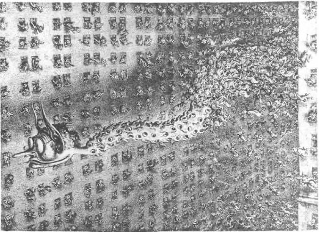
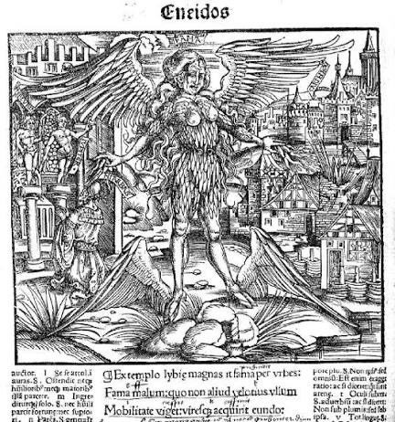
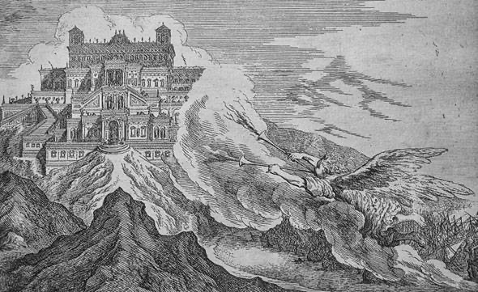
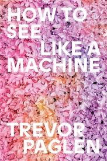

werdenberg-fama




FAMA
ÄSTHETIK
INSTALLATION
INSTALLATION
hybride bildwelt
KI wir punktuell eingestzt und so als Medium kritisch hinterfragt
Personifikation des Gerüchts/ lebt in einem Schloss aus Erz auf einem Berg, wo Himmel und Welt aufeinandertrifft.

MOODBOARD
Gegenstände im Raum werden belebt
3D Animationen
Digitalität wird durch alchemistisch/ panpsychistische Linse betrachtet
https://candidruetter.net/writings/kindmachine-bericht
animsim
